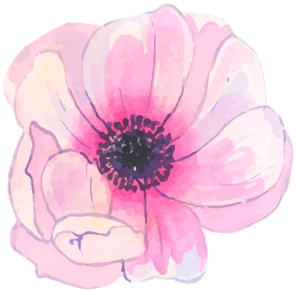
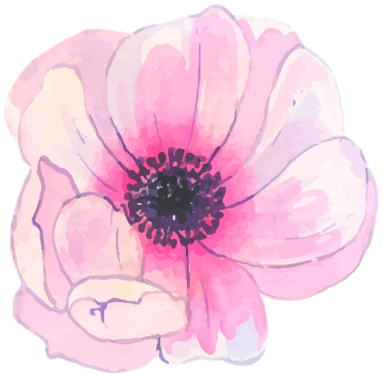

We built a D&D-inspired multimodal spellcasting game focused on teaching users how to
perform various spells using both speech and gesture recognition, and in turn, use these spells to
attack and defeat a variety of enemies.
Neumorphism and Neuroscience
I combined two of my interests, cognitive science and UI/UX, to study the science behind
neumorphism.
Additionally, I used Origami Studio to create various UIs using the trend. I enjoyed learning and
writing
about
the implications the style has on web accessibility.
6.805 Final Project
For our final project in 6.805 (Foundations of Information Policy), I developed a pool-based active
learning algorithm
to generate personalized data privacy policies. I used Adobe XD to create example UIs prototyping our
recommendations.
Venmo Redesign
For one of my first UI/UX case studies, I used Figma, Origami Studio, and Canva in this redesign of
Venmo.
I was able to learn about basic principles in user research, creating prototypes from wireframes, and
studying existing designs.
AccessiLink
AccessiLink is a tool for visually impaired people to better see all the links available on a given URL.
We used Flask/Python for the backend, HTML/CSS/Javascript for the frontend, and Figma for the initial
wireframes.
This project won the Figma Award at hACCESS!
 


 Current: Bay Area.
Current: Bay Area.
 Next up: previous projects and papers arrow_downward
Next up: previous projects and papers arrow_downward